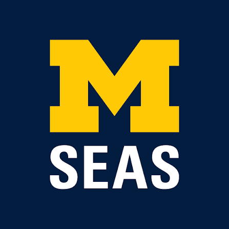

Education

Master of Science — Environmental Science (SEAS)
- Institution: University of Michigan, Ann Arbor, MI
- Graduated: May 2026
- Specialization: Ecosystem Science and Managment, Geospatial Data Science
Bachelor of Science — Environmental Science, Minor in Computer Science
- Institution: University of Michigan, Ann Arbor, MI
- Graduated: May 2024